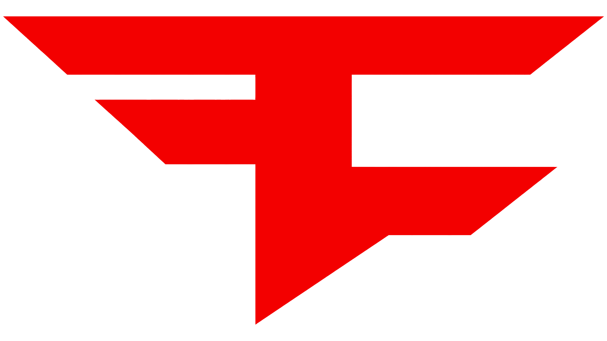

FaZe Clan
Histórico do time
Criada em 30 de maio de 2010 como o canal "FaZe Sniping", dedicado a vídeos de trickshots de Call of Duty no YouTube, a FaZe Clan se transformou em uma das maiores organizações de esports e entretenimento do mundo. Sua entrada no Counter-Strike aconteceu em janeiro de 2016, ao assumir o elenco internacional da G2 Esports. Em 2022, a equipe alcançou seu maior feito no CS ao conquistar o título do PGL Major Antwerp, tornando-se a primeira formação totalmente internacional a vencer um Major.
Design da logo
O símbolo da FaZe combina as letras "F" e "C" sobrepostas — a primeira invertida — representando as iniciais da organização. Criado originalmente em vermelho sobre fundo branco, o emblema passou por uma atualização em 2016 que incorporou dourado e azul às faixas, cores associadas às nacionalidades dos jogadores do elenco de CS:GO da época, antes de retornar a uma paleta predominante em vermelho e preto nos anos seguintes.
Linha do tempo das logos
-
2010 - 2016

O monograma original da FaZe Clan, criado por Joey "Ferox" Ricciuto, em vermelho sólido sobre fundo branco.
-
2016 - Atual

Versão do brasão usada no cenário de CS:GO/CS2, mantendo o formato icônico e a base em vermelho com contorno preto.